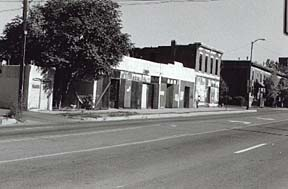

23rd Street between Welton and Glenarm

Cassady Sr.'s barber shop/family residence (left part of photo).
1928/1929. Neal was two years old.
``There, on 23rd Street between Welton and Glenarm next to the alleyway, was
a brown brick building of miniature dimensions. It housed an incredibly
cluttered shoe-repair shop, the accumulation of a half-century's
leather-litter. The old repairman who squatted daily before the ceiling-high
barrier of sweepings that choked this shop, was Neal's (Sr.) new landlord.
His two-chair barber shop that shared the building with the shoe stall was
acquired on a one-year's lease. Neal, Maude, Jimmy, Betty and little Neal
moved into the crowded quarters in the rear of the shop...Still, with seven
children, conditions in the shop's two small rooms were intolerable. There
were not beds enough; clothes lay everywhere; they could not squeeze
together into the kitchen and so ate in two groups.'' [First Third, p. 4]
Literary Kicks
Neal's Denver
Contributed by
Andrew Burnett